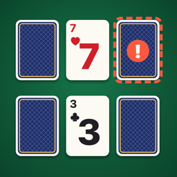

見たのに外したが分かる神経衰弱
見たのに外した札が分かる、トランプの神経衰弱。
伏せたトランプを2枚ずつめくり、同じ数字なら取る神経衰弱です（6組〜26組）。一度見た札なのに外した場面を数えて、どこにあったかを見せます。
- 見たのに外した。1枚目をめくったとき、同じ数字の札をもう見ていたのに2枚目でちがう札をめくったら数え、その札に朱の「!」を出します
- 知っていた組を取らなかった。同じ数字の2枚をどちらも見ていたのに、新しい札をめくって外したら数えます
- おぼえ度と外した場面。覚えていれば取れた場面のうち取れた割合と、外した場面の一覧（その場面の盤も見られます）
- ひとりで（何回でそろうか）・コンピュータ（やさしい・ふつう・つよい）・ふたりで。札は6・10・15・20・26組
- 登録・課金・オンラインの対戦はありません。記録はこの端末の中だけに保存します。画面のいちばん下に小さな広告が出ます（画面いっぱいの広告・動画の広告は出しません）